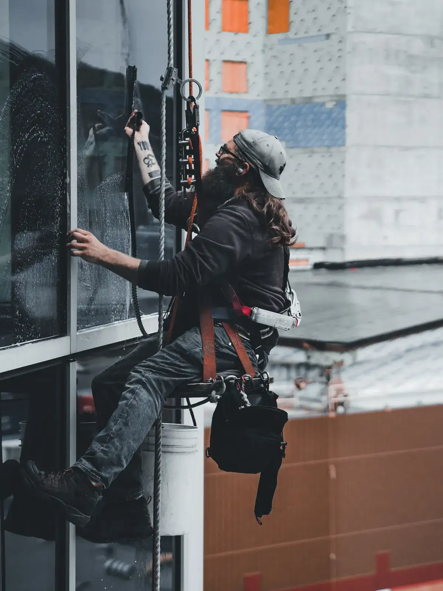
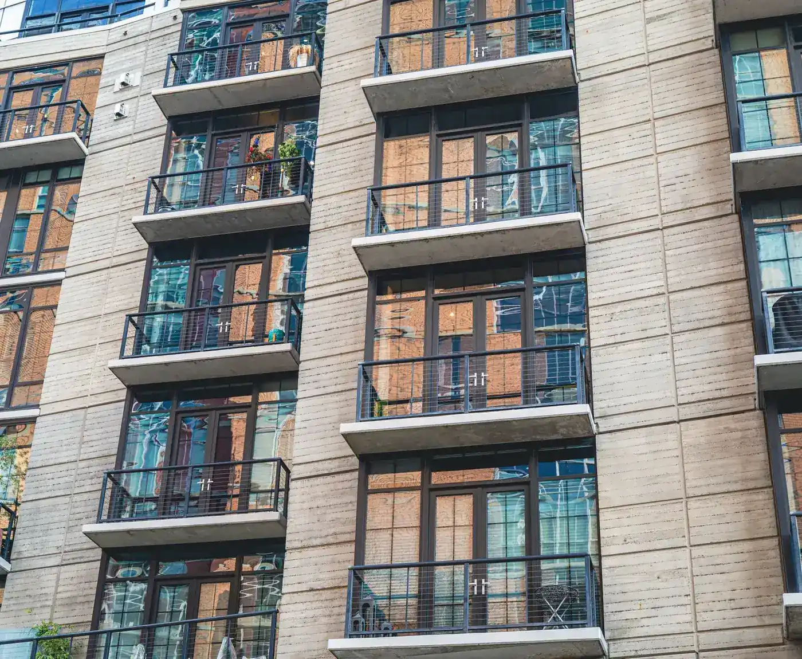
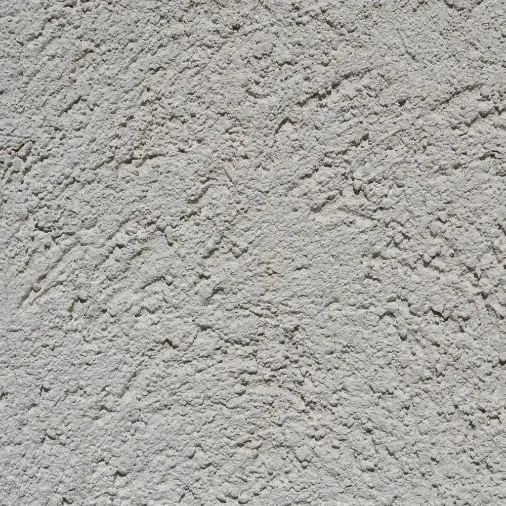
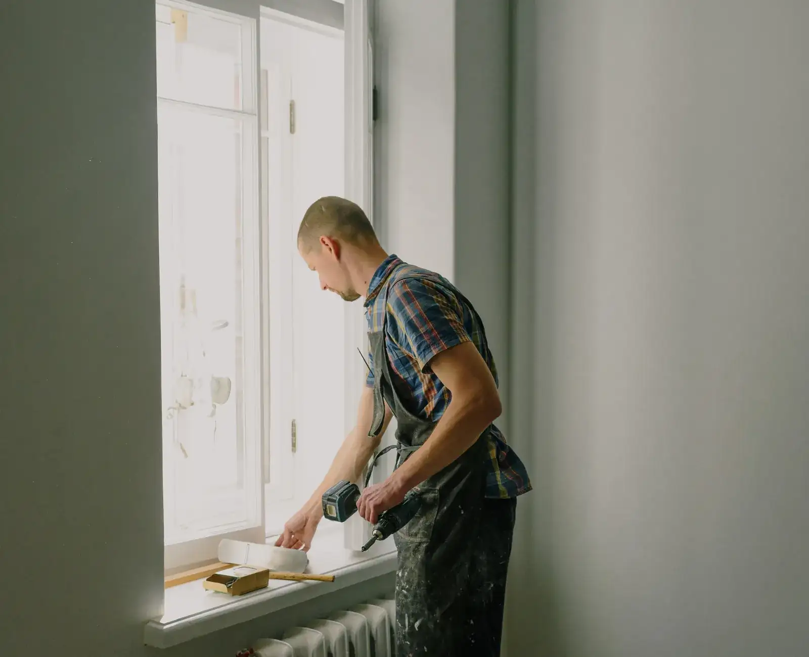
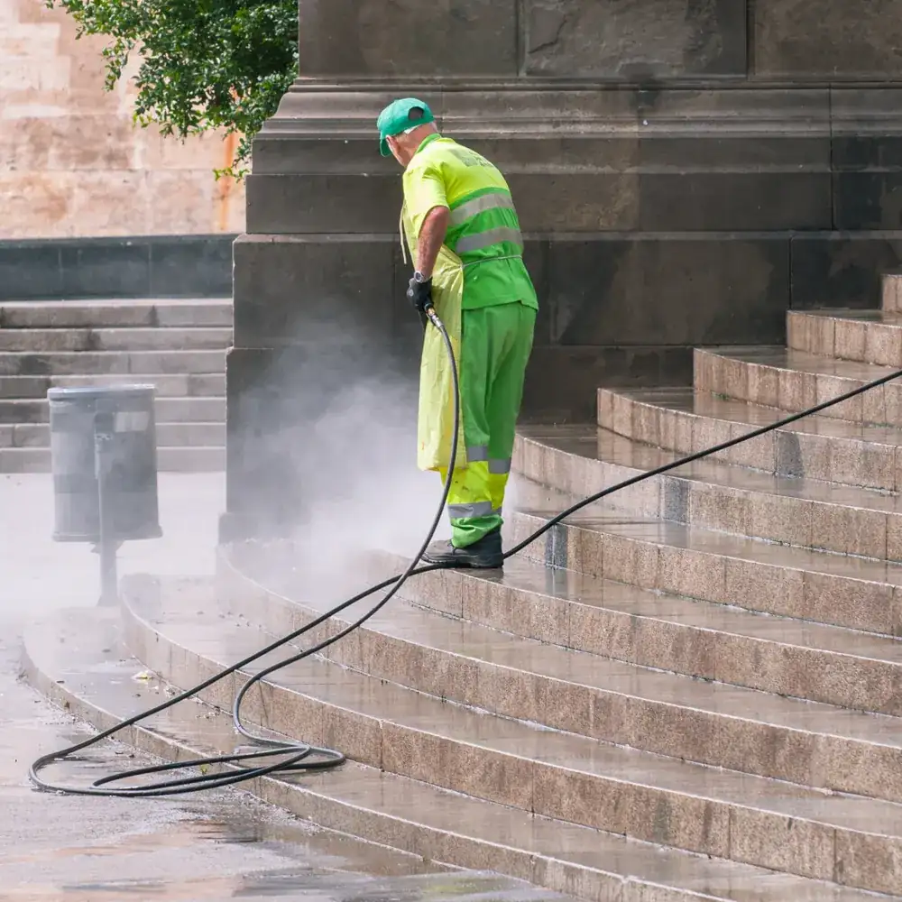
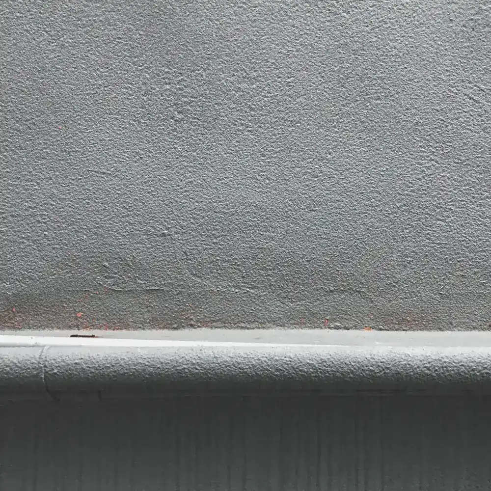
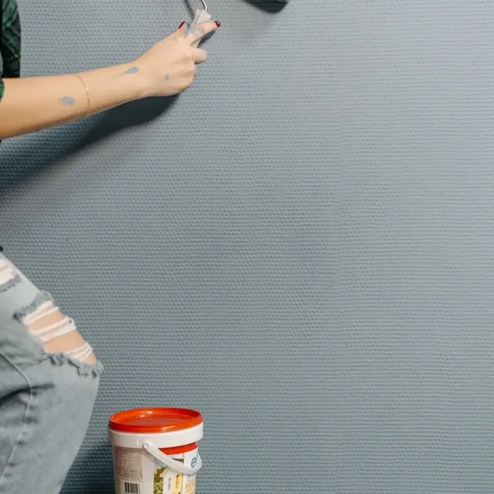
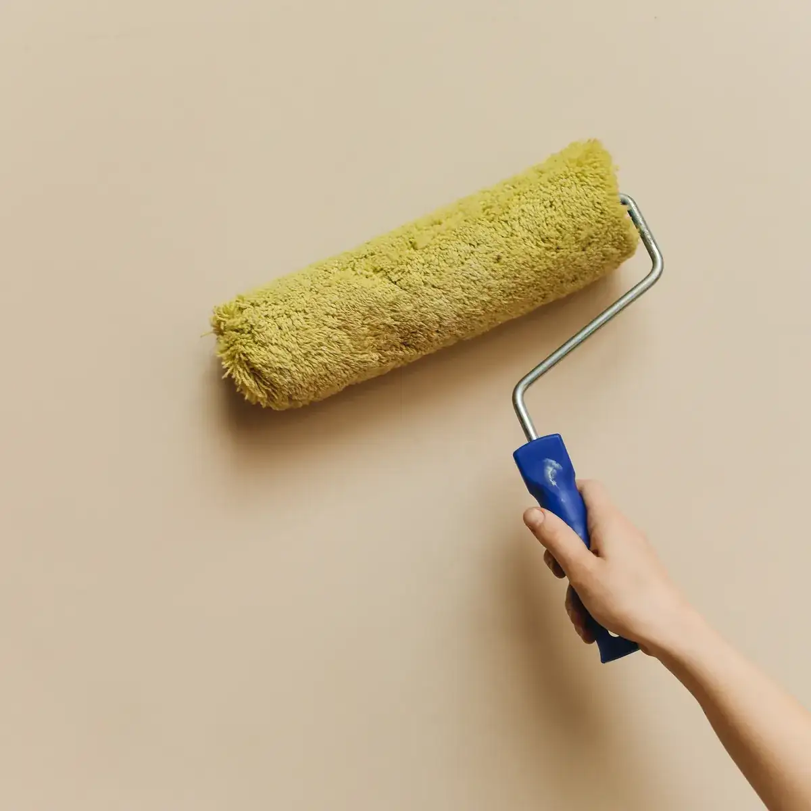
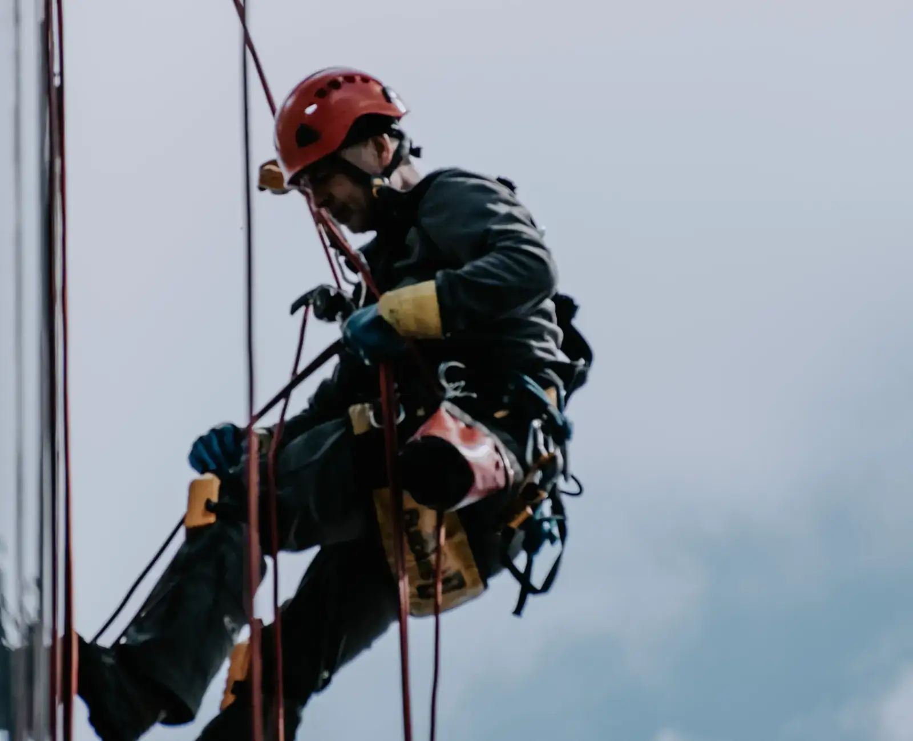
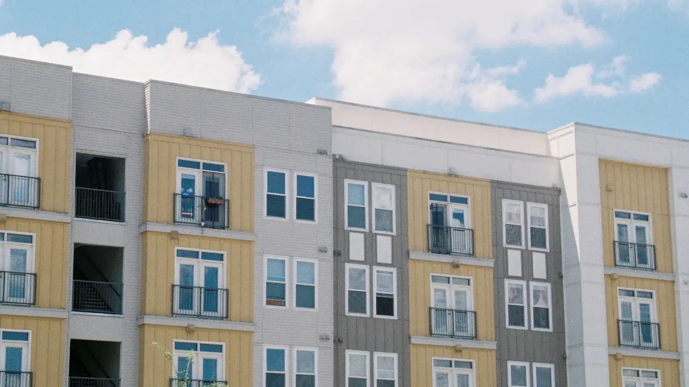

Pintaron el frente de nueve pisos sin cortar la vereda ni tocar el hall. Los vecinos casi no se enteraron de que había obra.
PINTATOP
+42 m — trabajo vertical en silleta
Pintamos tu fachada en altura, sin andamios ni grúas.
Bajamos colgados desde la azotea y pintamos frentes, contrafrentes y medianeras. También interiores y texturados tipo Tarquini, en CABA y Gran Buenos Aires.
- Sin andamios
- Sin cortar la vereda
- Presupuesto en 24 h

01 — el descenso
Un edificio se pinta bajando, no subiendo
Anclamos arriba y trabajamos hacia abajo. Eso es lo que evita el andamio, el permiso de vereda y las tres semanas de obra que vienen con ellos. Scrolleá y bajá con nosotros.
-
01
Anclaje en la azotea
Dos líneas independientes por operario: la de trabajo y la de vida. Se arma arriba, con el edificio funcionando normal abajo.
-
02
Revisión y sellado
Bajando se ve lo que desde la vereda no se ve: fisuras, juntas abiertas, revoque flojo. Se pica, se sella y recién ahí se pinta.
-
03
Fijador y mano de fondo
Fijador al agua sobre el muro sano y fondo parejo. Es la mano que nadie ve y la que decide cuántos años dura el frente.
-
04
Terminación y vereda limpia
Dos manos de acrílico o el texturado elegido, franja por franja. Al bajar el último tramo, la vereda queda como estaba.
+28 m — servicios
Lo que hacemos colgados
y lo que hacemos con los pies en el piso
-
01
Pintura de fachadas en altura
Frentes, contrafrentes y medianeras de edificios de hasta 14 pisos. Silleta desde la azotea: no se arma andamio, no se pide permiso de vereda y el edificio sigue con su vida.

-
02
Texturados tipo Tarquini
Revestimiento plástico texturado sobre frentes, muros y contrafrentes. Elegís el grano, nosotros preparamos el sustrato: sin base sana, el texturado más caro se cae igual.

-
03
Pintura interior
Departamentos, palieres, halls, escaleras y oficinas. Enduido, lijado y dos manos de látex. Se tapa todo antes de empezar y se entrega la unidad limpia, no “barrida”.

-
04
Difícil acceso y mantenimiento
Hidrolavado de frentes, sellado de juntas y filtraciones, cambio de sellador en carpinterías, pintura de tanques y torres. Todo lo que está donde no entra un andamio.

+19 m — texturados
Elegí el grano
y mirá cómo queda
Los texturados tipo Tarquini no son solo color: el grano define cuánta fisura fina tapa, cuánta suciedad junta y cómo se ve el frente con el sol de costado. Tocá una muestra.
Texturado grueso
Grano marcado, de mucho cuerpo. Disimula fisuras finas y revoques con historia, y aguanta el frente norte sin decolorarse.
Ideal para: frentes de edificio y medianeras a la vista




+11 m — cómo trabajamos
La silleta no es un atajo:
es el método
Trabajar colgados no es más riesgoso: es más controlado. Dos puntos de anclaje, un descenso por vez y la vereda siempre libre.
El andamio tarda tres días en armarse, ocupa la vereda todo el mes y se paga aunque llueva. La silleta entra a la mañana, baja el frente franja por franja y se retira cuando terminó el día. El vecino del segundo piso no pierde la ventana durante cuatro semanas.
- 0años trabajando en altura
- 0frentes y contrafrentes terminados
- 0para pasarte el presupuesto por escrito
Trabajamos en Capital Federal y Gran Buenos Aires: Zona Norte, Oeste y Sur. Vamos a mirar la obra antes de presupuestar — la visita no se cobra.
+6 m — obras
Lo que dicen los que ya bajaron el frente
Vinieron por una filtración en la medianera, la sellaron y de paso hicieron el texturado del contrafrente. Un solo equipo, un solo presupuesto.
Pedí tres presupuestos. Los otros dos sumaban andamio y permiso de vereda: casi el doble, y un mes más de obra.
+2 m — preguntas
Lo que siempre nos preguntan
¿Hace falta armar andamio o cortar la vereda?
No. Anclamos en la azotea y bajamos en silleta, así que no se ocupa la vereda ni se pide permiso al municipio. Solo señalizamos la zona de caída debajo del tramo en el que estamos trabajando ese día.
¿Tienen seguro y curso de trabajo en altura?
Sí. Trabajamos con ART y seguro de responsabilidad civil vigentes, y con certificado de trabajo en altura del equipo. Le mandamos la documentación al administrador antes de empezar, sin que la tenga que pedir.
¿Cuánto tarda pintar un frente?
Depende de la altura y del estado del revoque. Un frente de seis pisos en buen estado ronda los 5 a 8 días hábiles; si hay que picar y sellar fisuras, se suma una semana. El plazo va escrito en el presupuesto.
¿Trabajan con consorcios?
Sí, es la mayor parte de lo que hacemos. Entregamos presupuesto detallado por escrito para presentar en asamblea, con materiales, plazos y forma de pago separados, y facturamos.
¿Qué pasa si llueve?
Se corta el trabajo y se retoma al día siguiente hábil con tiempo bueno: pintar sobre muro húmedo arruina la terminación. Los días de lluvia no se cobran ni cambian el precio pactado.

0 m — a nivel de vereda
Contanos qué hay que pintar y en cuántos pisos
Con la altura, el estado del frente y una foto alcanza para darte un número. Si hace falta, vamos a verlo: la visita no se cobra.
+54 9 11 5598-7799Lunes a sábado, de 8 a 19 h.